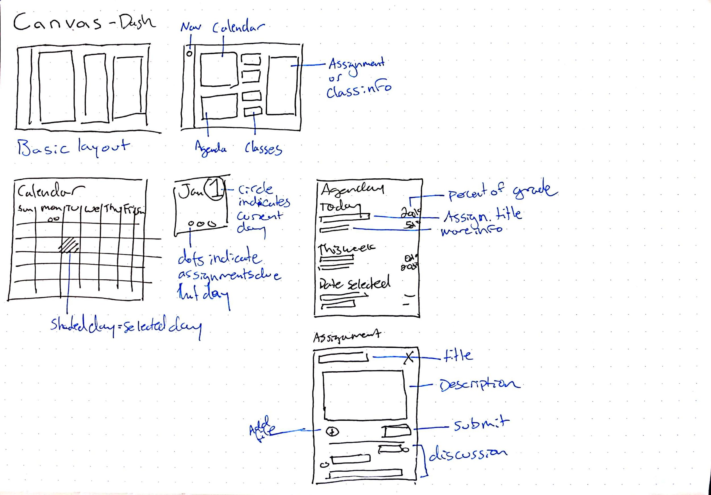
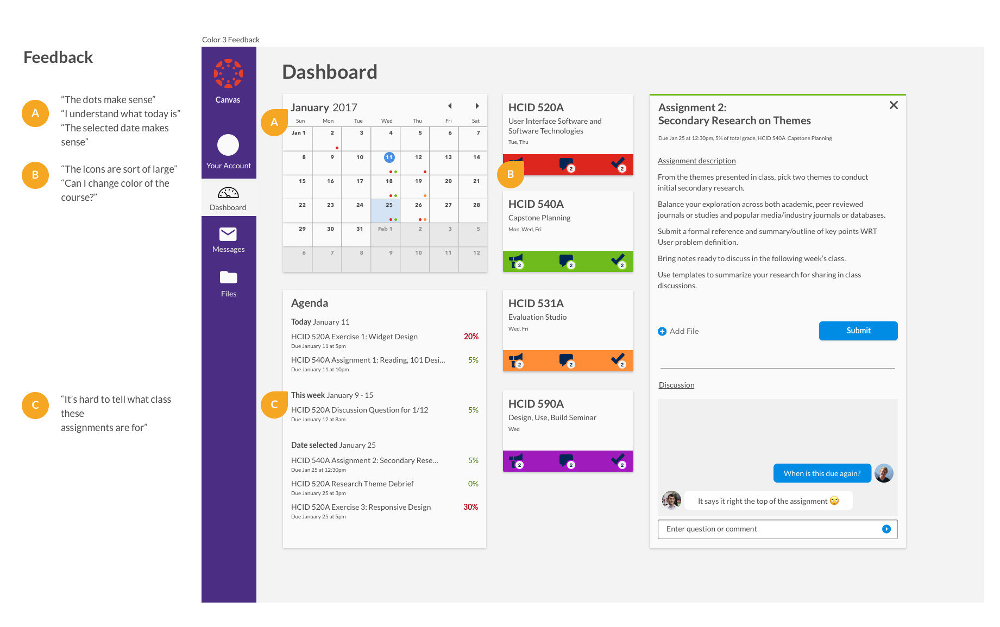

Web App
Canvas
Redesign of a learning management system dashboard.
Role
Research
UX Design
Prototype and tester
Problem
The Canvas Learning Management System (LMS) used the University of Washington currently has an underutilized dashboard. Additionally, Canvas is missing ways for students to prioritize assignments and manage their time. I addressed this question:
How can Canvas's dashboard be improved and support better time management?
Research
For this project, I interviewed Tyler Fox, past director of UW learning systems team as a subject matter expert to learn more about Canvas's functionality from an administrative side. I also interviewed three current users of Canvas to learn about how and why they use Canvas, their time management habits and most importantly, current practices. Interviews gave me qualitative data.
Here is what I learned:
- While there were different priorities between current users and differing most frequently used features, there was unanimity regarding the low perceived utility of the dashboard.
- Few users realized Canvas currently has a calendar feature which is helpful for determining how one’s time is used.
- Users adaptively change their priorities at least daily and sometimes multiple times a day based on what assignments they had completed, how much an assignment was worth and newly introduced assignments during class.
- Users almost exclusively used Canvas on their laptop or desktop and had a low percieved utility of other platforms.
Interviewees
Tyler Fox
Current Students
Survey Highlights
Device Importance
688 respondents reported that their laptop was the most important device for their academic success. This was confirmed in interviews as interviewees used Canvas when completing assignments, a task done exclusively on laptops. This information drove the final design solution of the web-based dashboard redesign.
Student Effectiveness
This survey data suggests that over 2/3 of users agree or strongly agree that Canvas is important and, in interviews, would like to use it more and use it more effectively. This allowed me to confidently pursue a Canvas improvement rather than another direction.
User journey storyboard
For reference when developing a solution, I described a typical user journey translated from interviews into a short storyboard. An insight was that students typically only opened Canvas when they were in a position to do schoolwork and they usually had some sense of what was due -- Canvas was more useful in prioritizing and submitting assignments.
Submit an assignment user flow
From my interviews, I discovered assignment submissions to be a key part of the Canvas experience. I created a user flow of doing this to demonstrate the current process and found the submission process to be quite cumbersome. My eventual design solution cuts out a good deal of this initial process.
Ideation
First I sketched out broad possible directions, trying to figure out ways of approaching my design. Afterwards, I nailed down specifics using detailed interface sketches.
Thumbnail sketches
To arrive at a solution for the dashboard, I sketched out dashboard possible designs. These are some thumbnail explorations.
Interface sketches
These sketches are still exploratory and low fidelity, but show use of space and purpose better. I prioritized a laptop or desktop full browser experience due to research findings. I experimented with different layouts and decided to divide space up into three main columns: Calendar and assignments, classes, and a space with a temporary window that could be filled with different information, such as course information and assignment information.
Wireframes and testing
I created a site map to organize information and then interactive wireframes for prototyping in Sketch. Next I put them in InVision for evaluation them using a usability testing protocol I created. My participants were Canvas users, so they were familiar with the current system.
Site map
Initial layouts and wireframes
Testing the wireframes
Asking users to evaluate and try and complete tasks and locate information yielded helpful information for continuing the design. I conducted two short rounds of user feedback to see if there were features they were expecting or missing, and if the design read as I intended it to. Below are some highlights of the feedback I received during these two rounds.
Final design
Course window
The space on the right of the dashboard is used for both assignment information and course information. Here a course has been selected. Always present is the title and details about the course, and the top of the window is accented with the courses color. Users can navigate between home, announcements, discussion and grades. All of these were present in the original design, but my design consolidates and simplifies navigation.
Assignment window
This window shows an assignment. The assignment window shows the name of the assignment, accented with the course's color. Underneath, details about the assignment like due date, percentage of grade and the course it is for are shown. Users can upload and submit files as well as ask questions or post comments about the assignment. Frequently, many students have the same question about an assignment -- this design prevents students asking their peers and instructors individually, wasting time.
Old vs new dashboard
This redesign was created to help students manage their priorities, and simplify assignment inspection and class information at a glance. The Canvas LMS dashboard currently provides too little and too poorly organized information, and suffers from the these main issues:
- The current system groups and collapses by default Announcements, Notifications, and Discussions, which makes it challenging to associate these individual items with their respective classes.
- The To-Do and Coming Up sections of the dashboard are useful and used shortcuts, but their entirely text based presentation lacks the visual dimensionality of time key to managing priorities.
- While the text does present the amount of points an assignment is worth, this is without context as the point amount is often a part of a weighted category making comparing assignments by points a useless measure.
The following features define the revised dashboard:
Calendar
- Shows assignments due throughout the month. Assignments are color coded with the course color. Each day shows the classes with assignments due. Current day is indicated with a blue dot surrounding the date, and the selected day (accessible by clicking days on the calendar) is shown by highlighting the day in blue.
Agenda
- Shows assignments for today, this week, and a selected date. Assignments are quickly recognizable as belonging to a certain course by the colored dot to the left, the same system used for the calendar days. To the right of the assignment is how much the assignment is worth. A gradient of black to gray quickly indicates the importance of the assignment.
Course cards
- Separation of course information into cards based on course allows attention to be separated efficiently by course.
- To quickly identify the course and all materials associated with the course, the color of the card is customizable.
- Notifications of announcements, new discussion messages and grade feedback.
Discussion
- Casual discussion about a particular assignment or course schedule.
Final word
Within the project timeframe, I was able to successfully solve the problems I set out to solve. However, given more time I would like to further improve the interface design, and use more rounds of testing to further improve functionality.
The way I tested my wireframes provided some usability insights but revealed more about concept validation. More rounds of fidelity usability testing would be important moving forward.